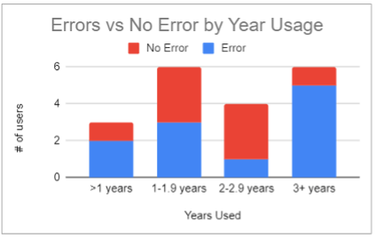

Background
Venmo is a very popular money transaction app among young people. Unlike many other apps that require a bank account, it’s independ digital account makes money transactions extremely convenient between friends. It’s just like a digital wallet that you can put your changes in. However, not all the people are enjoying using venmo: at least all the members from our group agree that venmo’s interface is bad. We often find ourselves making mistakes while using venmo no matter how long we’ve used it. Something needs to be improved for venmo.
Problem
Venmo’s user interface and user experience needs to be improved so users can operate more efficiently.
Let's observe how other users interact with venmo in real situations
Methodology
The goal of our data collection was to understand and figure out the errors that users make when it comes to using Venmo. We will apply the Master-Apprentice Model to observe how the users understand and interact with Venmo.
Those who were interviewed were college students with no specific demographics, and picked at random. Most interviews were conducted on campus and was a one to one meeting. The interviewer asked a random person if they had the Venmo app and asked to take part in an interview. Then the interviewer proceeded to ask questions before asking the interviewee to complete a task (request and send money to interviewer). This whole interview process, like stated above, helped the data collection go smoothly as we were able to observe the interviewee and analyze what slips/mistakes they made during the task portion of the interview.
1. What are your general thoughts about Venmo?This question will be used to get the opinions that people have about Venmo. It could also be a guiding question that could help us find out whether or not they like this product. Since we are trying to redesign this app, having this question will let us know about the structure of their mental model. This will also help us find out what the most important features are for the users. On the other hand, this question will also let us know features about the product that the user doesn’t like allowing us to find the root of the problems people have when interacting with this app.
2. How long have you been using Venmo? Why did you start using Venmo?Asking these questions will give us a better idea about how well the person knows the app, and help us guide them into talking about their journey with Venmo and how their knowledge about this app has changed over time. Having this question would inform us about the evolution of their mental model of the application.
3. When and where did you last use Venmo?People use Venmo for a variety of reasons, and with this question, we would be able to extract how often people engage with the app. Whether it be needing to pay someone, or waiting for someone to pay you back, understanding the user’s reasoning for using the app will be very important to our redesign.
4. Do you know any other apps similar to Venmo?These questions are used to see other apps that people know of, and how these apps have morphed their mental models. In addition, asking them these questions will also let us know if they prefer certain features of one app over the other. Things such as having better navigation, connection to banks, and popularity are a couple of the characteristics we are expecting when people describe these apps. We are also looking to see what features properly bridge the gulf of execution in a transaction app.
5. PROCESS- Have them request from us —> Ask them to locate this request
- We complete the request
- We request our money back —> Ask them to locate our request
- Have them complete our request

Why this way?
Easier to see where and how possible errors are made when requesting or sending money through Venmo. This form of collecting data is known as the Master-Apprentice model. This process helps us understand which users are more accustomed to using venmo and which are less avid with its’ various functions. Lets us see a users mental model of the app and how their gulf of execution is enacted, and then how their gulf of evaluation is either met, or if not, then how they decide to go back to the gulf of execution.
After completing the processes, we asked follow up questions about any errors we find that the user had committed. This is to understand their mental model much better and distinguish what type of error the user made. What may have appeared as a Knowledge-Based Mistake may have actually been a Memory-Lapse Mistake because the user was stressed from having their screen being recorded.
What are the common errors?

According to the interview data, most common errors that interviewees made are Memory-Lapse Slip, Description-Similarity Slip and Knowledge-based Mistake. For the Memory-Lapse slip, most interviewees made this error because they forget to add notes before sending the pay/request. There are also situations that they forget to enter money amount or just forget where to find the correct interface due to panic because of the screen capture. For this type of error, users have the correct mental model to complete the task but due to some memory lapse, they forget some steps.

For the Description-Similarity Slip, due to the similarity of the process, users may automatically do the operations that they usually do. In the interview, one user click “pay” instead of “request” because she usually click “pay”. Another interviewee try to find the payment under “incomplete” section but it’s actually not there. Interviewees who make this type of slips also have correct mental model for how to use this app but because they are doing another similar process too often, they automatically repeat that process for another similar but not exact task.

The most common error is knowledge-based mistake, which takes about 44% of all errors. For this error, interviewees just simply don’t know where the correct tab is and start to randomly tapping familiar tabs to guess. This is a mistake because users do not have a correct mental model for the product because they are lack of knowledge to the product and there is no good system image to gap the gulf of execution. There are also some small mistakes like rule-based mistake, in which user don’t know the rules of the decimal point in venmo by thinking it would be added on automatically and turn out put in 0.1 instead of 0.01. That is a mistake because they are using the wrong method to enter number, which means users don’t have the correct mental model to interact with this function.
Pattern & Trends
We had a small sample size of 19 people. It is important to note that we also had 9 Android users and 10 Apple users. The user interfaces between the both are slightly different from each other, so in order to “even the playing field” we tried to interview each one an even amount of times. It is also important to note that we interviewed ages ranging from 19 - 24 (general college ages); however, a majority of those interviewed were of the same age group (19-years-old). It is possible that this may have affected our data because they’ve been using venmo for a shorter period of time compared to other users. Not only that, but only 3 of our 19 interviewees could be considered “new” users (under 1 year of use) meaning that our data involves experienced users. While this may not be a huge issue; this may have interfered with us learning how people learn how to find and us these specific features.
Despite this, the plot shows that no matter how experienced a user is, there is still room for error. It is thought that with experience comes less errors; however, looking at the stacked bar graph it appears that the users who used have been using the app longer actually made more errors. This information is crucial because it suggests that even avid users are making errors, thus showing that the problem with these errors aren’t merely human mistakes, but are mistakes caused by a poorly designed financial app. This is not to say that Venmo is a bad app, but rather that Venmo can be improved to minimize the mistakes which even avid users find themselves making. In order to minimize the errors made, it is important to understand where the problem lays. In this case, Venmo’s application design is the problem linked to these errors.
Sample Demographics
Younger interviewees had been using Venmo for a shorter period of time in comparison to the other age groups, who a majority appear to have been using it for 3 or more years (with a couple exceptions). When asked how long they had been using the application, some first responded with “When I started college” and then followed with an estimate of how many years it would be. Despite Venmo being founded in 2009, it appears that Venmo only becomes known to an audience once they are around college age.
This is further backed by where we got an estimate “Starting Age” by subtracting each user’s length of usage by their respective ages. As shown, it appears that a majority of users began around the ages of 17-18 which would be considered freshman year of college.
Is there anything to do with phone types?
The graph above shows the different types of errors done by all users separated by phone type. The most common mistake done between both Apple and Android is a Knowledge-Based Mistake. There are 7 different instances where it occurs; both Android and Apple almost equal in number. There were 5 more occurrences where the interviewees clearly stated “I don’t know where it is” but were not listed as a Knowledge-Based Mistake because they were able to navigate their way to the specified feature without making an error.
Another common error done is the Memory-Lapse Slip. This slip happened 4 times total evenly between both Apple and Android and was for the same reason: forgetting to add a note when requesting a payment. This leads us to wonder if having a note be required was necessary, or if it should be optional.
There also appears to be more errors occuring for the Android interface (11 errors) in comparison to the Apple interface (7 errors). Additionally, more types of errors appeared from the Android interface: Capture Slip, Description Similarity, and Memory Lapse. Description Similarity Slip was the most common out of the three, and second most common out of all types of errors for Android. This may have something to do with the application’s interface due to both applications functions working in very similar ways but having different locations and icons.
Time to Redesign!
Comptition Products
When it comes to money, people often have different priorities when using transaction apps. As a designer, it’s not always your job to fulfill every request of every user, but to figure out what people prioritize in order to optimize your product. Let's take a look at some popular transaction apps and analyze Why are they designed in that way.
Zelle's UI is designed in very virant color. In order for user’s to make sure they are paying the right users, phone numbers are directly attached to someone’s account, so there is no need to figure out if you’re paying the right person, since their phone number will prove that it’s them right away. Compared to Venmo, being able to connect contacts to your account creates trust between the user and the company, since it shows that they prioritize this factor in a transaction app. Another feature that caused one of our interviewees to prefer Zelle over Venmo, is the fact that once you pay someone or get paid, it goes straight onto a bank account, instead of sitting in the app as “Venmo Cash.” This instant transfer is convenient for people who need the money right away, and saves them from having to wait for their money.To add on, often times Zelle is already included in your banking apps, so you don’t even need to download this app in order to use Zelle.
Similar to Zelle, CashApp also gives off a minimal feel along with the vibrant color. It prioritizes the user and their goals of trying to send or receive money from people. Another comparable feature is that it affords for the user to be able to check stocks. This app seems to target those who own stocks, or those who are looking into getting involved in the stock market . CashApp even allows users to purchase stocks through their app. Another feature that’s included is the ability to exchange Bitcoin.
Similar to Zelle, Facebook Messenger allows the user to confirm that they’re sending money to the right user immediately, since they are going to be sending it to a person that they’re already friends with on Facebook. Although this seems like a very accessible and user-friendly feature, we believe that users don’t use it as much because of the fact that no one’s really used to paying someone through a messenger app. Snapchat also included this feature, but once it was introduced, many people never even heard about it again.
What I have to mention is that WeChat is also a messenger app but is is one of the two most popular transaction apps in China along with Alipay. What makes Wechat stands out is a small function called "Red Envelop", which fit with Chinese tranditional culture and Spring Festival. Wechat is successful since it finds its special Payment scenario, and fullfill user's need to giving money in a more cultural and casual way.
ApplePay is ran by Apple and also very convenient for iPhone users. The app is designed to help iPhone users easily transfer money between each other. Apple pay works similar to Venmo in the sense that it can keep the money within the app, but can also transfer the money to a user’s personal bank account. The difference however, lies in that Venmo is universal while apple pay’s main focus is iPhone users/ Apple Devices.
Centralizing the Requests
Since out of our 19 interviewees, 12 of them had issues trying to figure out where the existing requests were. The most confusing part for them was trying to distinguish between the requests that they received and the requests they sent.
This is the current UI of the Venmo app, that shows how to see what people have requested from you. As you can see, this is separated from the requests that you have sent other people. This has lead to confusion among users because they either mix up the two or don’t understand at all where to find what they need.
This is our redesign of the current Venmo feature. We decided to centralize the request feature, to decrease confusion. To further distinguish between the types of request, we changed the colors of the amount of money being requested.
The change we made was to create a tab called “requests,” to stick to the language used when dealing with the requests people send and receive. Having a centralized area would make it easier for users to navigate and understand where to find what they need, without having to guess where it is. To further distinguish between the requests sent and received, we also changed the colors of the amount of money being requested. If you are sent a request, the color is red, signifying that you will be losing money. The requests that a user sends out would be colored in green since they are gaining that money. We believe that this would allow the app to be able to empathize with the users, since using this app should be quick and easy.
Simplifying the Side Bar
The existing sidebar of the Venmo app had a lot going on, and we believe this also contributed to the fact that people weren’t able to find where their existing requests were, since the signifiers weren’t properly communicating what they did, and wasn’t bridging the gulf of execution.In order to mitigate these errors, we decided to simplify the menu bar, by only keeping the Home, Requests, Payments, and Venmo Card options. We also decided to only keep the symbols for the help and settings windows since these symbols are fairly universal, and will be familiar to most users. We also decided to remove the “search people” because the user can already access this through the payment section, and having it in two different places may confuse them.
Changing the Pay and Request Features
Another feature that 3 out of our 19 interviewees had was confusing the Pay and Request buttons. It is more common for people to use the “pay” button, so as a Capture Slip, one of our interviewees pressed “pay” instead of “request” because that was what they were used to doing. In order to emphasize whether or not the user needs to pay or request from someone, we decided to add a lock-in to allow the user to confirm who exactly they want to interact with, and what they’re trying to do. We also included an option to change their option to payment or request. We prioritized this because we know that once a user pays someone, they’re not able to cancel your payment, and the user would have to ask that person to pay you back since the user made a mistake. In addition, we also increased the font for the amount of money you’re sending, and who you’re sending to. We decided that this would be a good idea because 2 of our users accidentally typed out the wrong amount of money to send, and this would be troublesome for users, since there is no way to go back. This also decreased the amount of whitespace available to describe what the transaction is. We decreased it because 5 out of 19 interviewees forgot to add a note, which shows that describing what the transaction is, is not a priority for the user
This is Venmo’s current interface when it comes to paying or requesting from someone. People usually slip up when they forget to add a note, or pay instead of request.
This is the redesign for the options to request. As you can see, the user now has the ability to choose whether or not they request or need to pay someone before entering the window where they input all of the other details
Removing the “Public” Feed
The Public Feed portion of the Venmo app is set up to be similar to a social media app. Any transaction a user does is automatically set up as public, thus showing anyone on Venmo a user’s transactions on the app. However, these transactions can be set to “friends only” (people who friend you on Venmo are the only ones able to see this transaction), and “private” (only you and the other person in the money transfer can see this transaction). While this feature is liked by some users, many people who were interviewed stated they were not comfortable with the automatic public feed feature of Venmo. Additionally, there are no signifiers clearly showing the users how to change the public feature and set it to private or friends only. This makes it even more difficult for user’s to keep their transactions private. When it comes to money, some people like to keep their transactions private and therefore don’t like the idea that their personal finances are public. By removing the “Public” Feed feature of the Venmo app we make the app more private and better for users who prefer to keep their finances away from the public. Another reason for the removal of the Public Feed feature on Venmo is that it would help clear up space for the more important features that Venmo offers. Rather than showing other people’s transactions in the Public Feed, this area can be changed to just showing the user all of their own transactions. This makes the app design seem less cluttered and helps signify more relevant app features of Venmo. This redesign also allows for users to clearly see what transactions they have made in the past and helps keep their transactions visible and easy to manage; they no longer have to hunt down where to find past transactions. Additionally, with the simplification of this design, it clears up any need for additional signifiers to show where to find past transactions.
Reflection
This is the first project I've done in the field of UIUX design and the project is very focused on user research. When I'm writing this words down, it's already 2 years after completing the project. At the moment, I'm pondering the relationship between Product and User Experience. Although Venmo's user experience is not very good, there are still many users using that app. I think the reason is that Venmo can meet those users' goals and users can compromise to UIUX design that are not very good if the function is good. However, if I become a designer in the future, I will try to create products as art pieces constantly refine user experience.